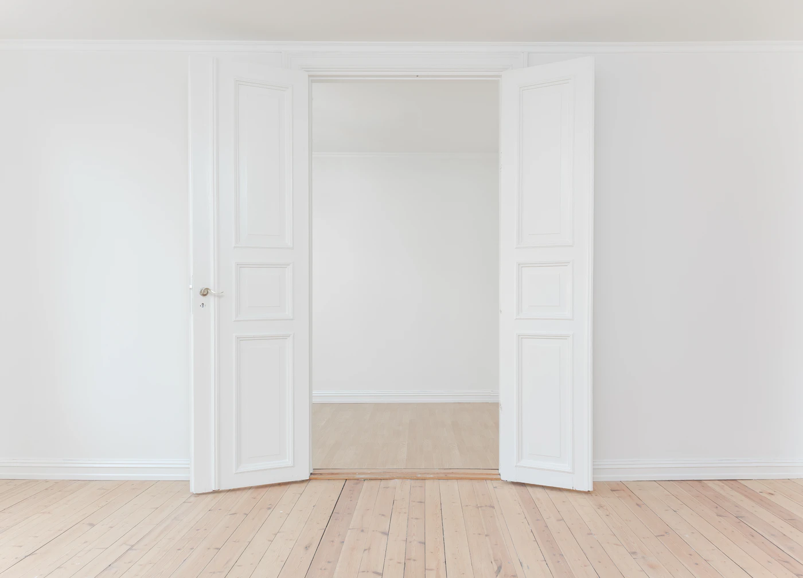
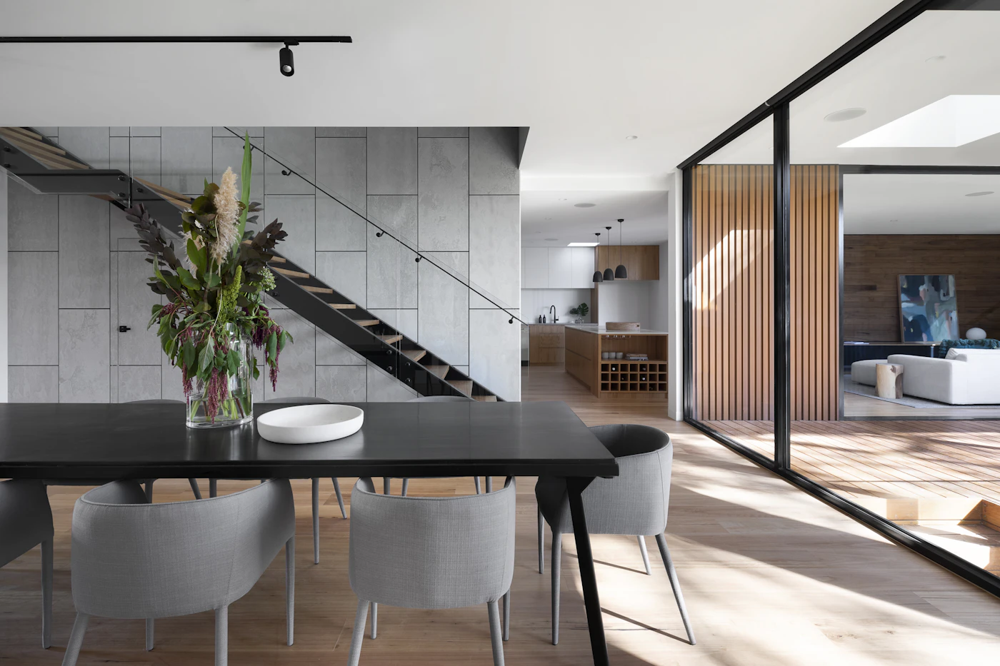
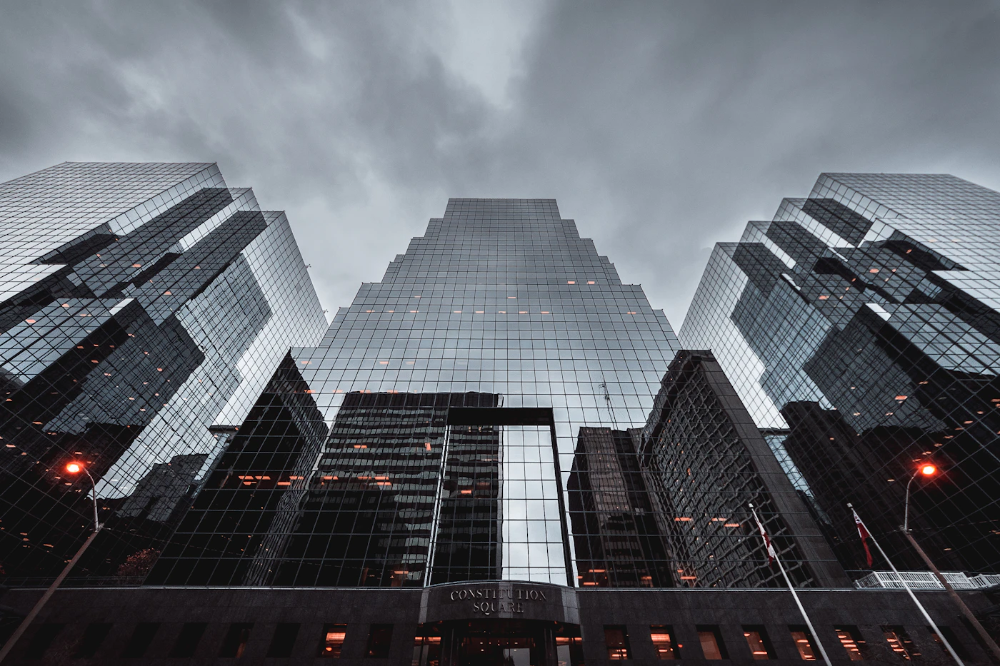
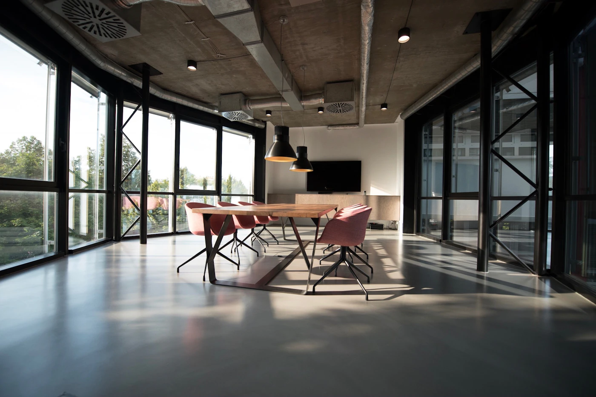
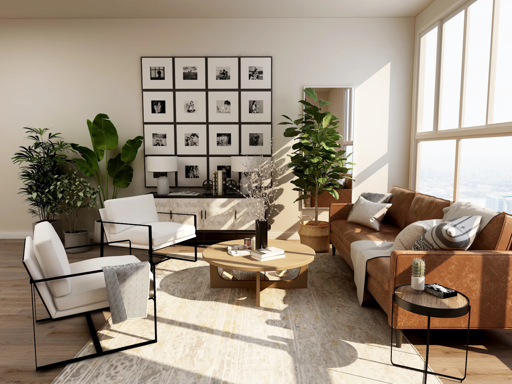

THE VISUAL JOURNALFORM / TEXTURE / PERSPECTIVE
Explore.

A collection of forms,
textures and perspectives.
SELECTED PERSPECTIVES01 — 09






Nothing
is ordinary.
A collection of forms,
textures and perspectives.





Nothing
is ordinary.
Explore Nameless across our digital platforms.